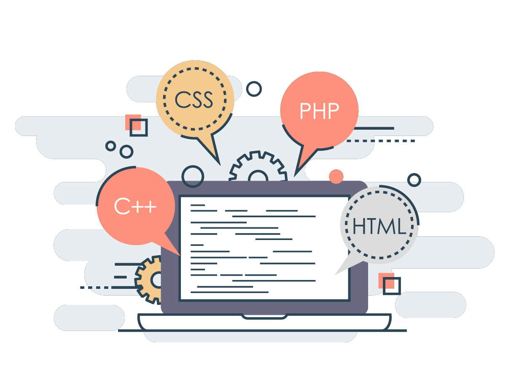

Hi, My name is Bhat Mufasir
I am a Passionate

Work Experience

HTML Developer
HTML developers are responsible for creating websites from the ground up, including adding
content, developing the layout, and ensuring the website runs properly.
CSS Developer
CSS developers are web professionals whose primary responsibility is to deliver a polished and
styled product to the visitor's browser. Practically every website uses CSS, but CSS is often
not considered an “equal” in the modern web development stack.
Java Script Developer
A JavaScript developer is responsible for implementing the front-end logic that defines the
behavior of the visual elements of a web application. A JavaScript developer is also responsible
for connecting this with the services that reside on the back-end.
C++ Developer
A C++ developer is a software developer who specializes in the coding language of C++. The work
primarily takes place in a quiet office setting in front of a computer.